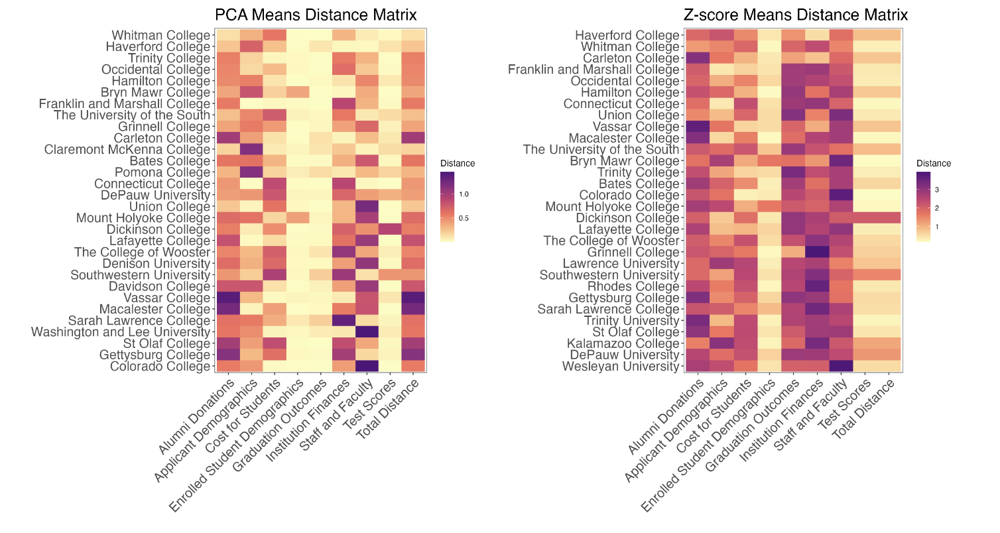
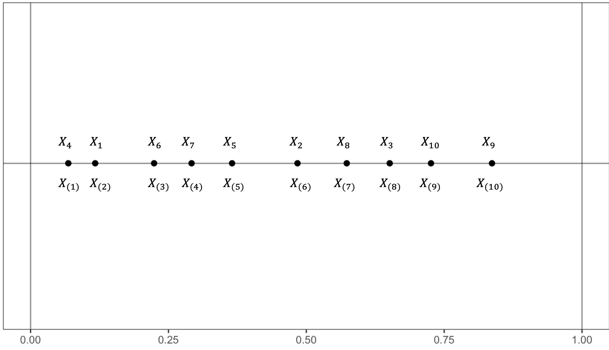

Projects
Math 343: Comparing the Comparators of Reed College
Fall 2025This was the project I worked on for Math 343: Statitistics Practicum. We worked with the office for institutional research to develop a method for finding and assesing possible comparator colleges for Reed. This class was entirely project based, so I worked on this with my group-mates for the semester. I worked with Nat Lincoln and Acadia McDonald.REU - Hampton University: Neural Network Clustering Methods on VIIRS Data
Summer 2025These were the slides I gave during my REU at Hampton University. I did research on clustering methods for satellite images of clouds. I was trying to see if we could use a neural network scheme to cluster the clouds better then more usual methods like K-Means.
Math 392: Order Statistics
Spring 2024This was my final Project for Math 392: Order Statistics. We were given Order Statistics to present on. I was responsible for doing most of the proofs for the theoretical foundations and asymptotics. I was working with two other students in the class.Math 243: Breaking news: This Rock Might be a Problem
Spring 2024This was my final project for Math 243: Statistical Learning. We used mixed effects and generalized linear models to predict NASA's method for classifying asteroids as potentially hazardous to Earth. I did this with two classmates, Sofia DeAngelis and Lima Popal.
-
Math 391: Shannon's Noisy Channel
Fall 2024This was my final project for Math 391: Probability. I went through a proof of Shannon's Noisy Channel accessibly at the undergraduate level.